10.1 k近邻学习
k近邻(k-Nearest Neighbor,简称kNN)是一种常用的监督学习方法，给定测试样本，基于某种距离度量找出训练集中与其最靠近的k个训练样本，然后基于这k个邻居的信息来预测，它没有显示的训练过程，是懒惰学习(lazy learning)
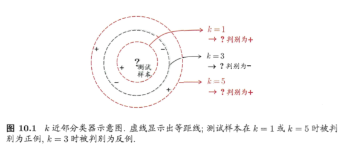
对1NN在二分类问题上的性能做一个简单的讨论
给定测试样本\(\vec{x}\)，若其最近邻样本为\(\vec{z}\),则最近邻分类器出错的概率:
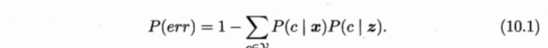
我们可以得出，虽然最近邻分类器简单，但它的泛化错误率不超过贝叶斯最优分类器错误率的两倍
10.2 低维嵌入
上一节的假设是训练样本的采样密度足够大，但这在现实中很难满足，在高维情形下会出现维度灾难
缓解维数灾难的一个重要途径是降维(dimension reduction),很多时候尽管我们观测或收集到的数据样本虽然是高维的，但与学习任务相关的也许只是某个低维分布
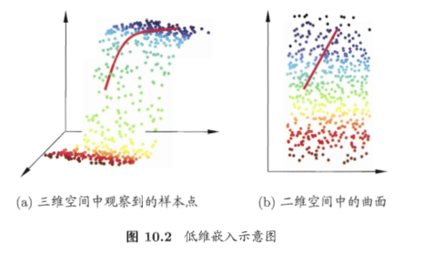
若要求原始空间中样本之间的距离与低维空间中的距离相等，就得到多维缩放(Multiple Dimensional Scaling,简称MDS):
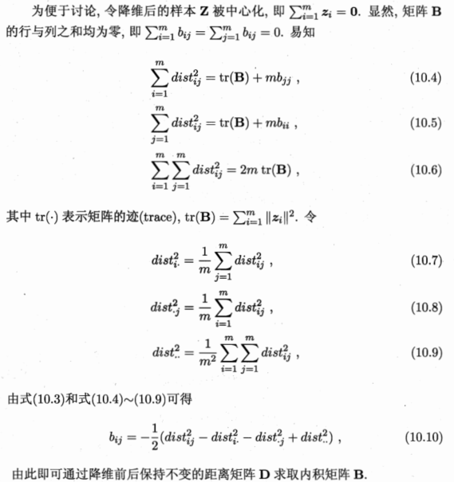
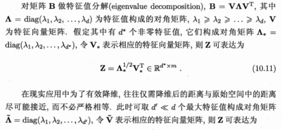
一般来说，欲获得低维子空间，最简单的是进行线性变换
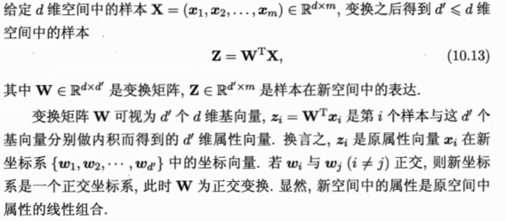
10.3 主成分分析
主成分分析(Principal Component Analysis,简称PCA)是最常用的一种降维方法，如何用一个超平面来恰当的表达所有样本？，如果存在这样的超平面，它应该具有：
- 最近重构性：样本点到超平面的距离都足够近
- 最大可分性：样本点在这个超平面上的投影应尽可能分开
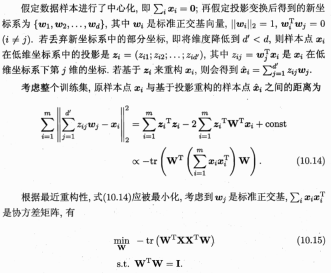
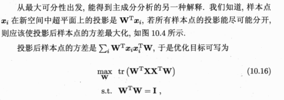
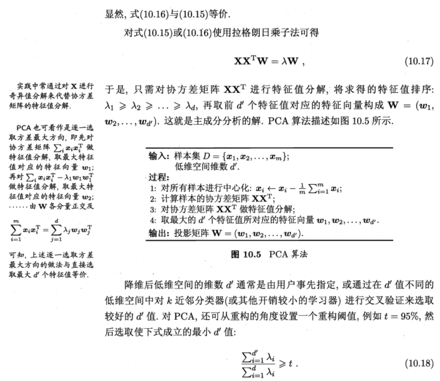
10.4 核线性化降维
线性降维方法假设从高维空间到低维空间的函数映射是线性的，然而在很多现实任务中可能需要非线性映射才能找到恰当的低维嵌入
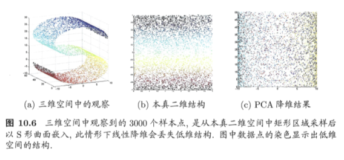
基于核技巧对线性降维方法进行核化，核主成分分析(Kernelized PCA,简称KPCA)
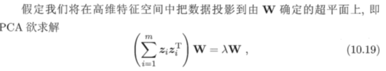
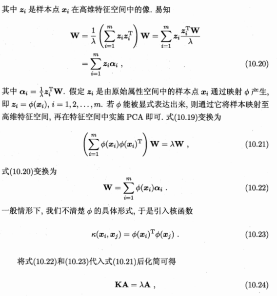
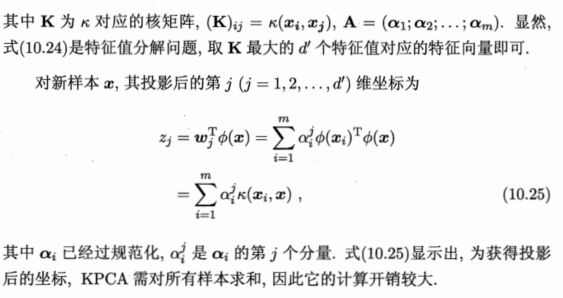
10.5 流形学习
流形学习(manifold learning)是一类借鉴了拓扑流形概念的降维方法
10.5.1 等度量映射
等度量映射(Isometric Mapping，简称Isomap),认为低维流形嵌入到高维空间后，直接在高维空间中计算直线距离具有误导性，因为高维空间中的直线距离在低维嵌入流形上是不可达的
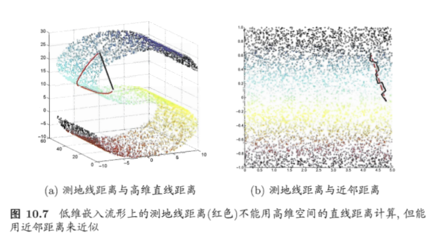
10.5.2 局部线性嵌入
局部线性嵌入(Locally Linear Embedding,简称LLE)试图保持邻域内样本之间的线性关系
10.6 度量学习
对高维数据进行降维的主要目的是为了找到一个合适的低维空间，使得在此空间进行学习比原始空间性能好，事实上每个空间对应了一个距离度量，寻找合适的空间实质上就是寻找一个合适的距离度量，而度量学习(metric learning)就是直接尝试学习出一个合适的距离度量
想要对距离度量进行学习，就要有一个便于学习的距离度量表达式，我们需要引入可调节的参数
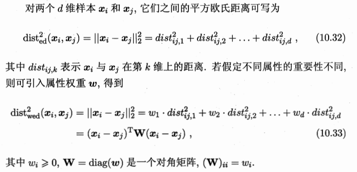
\(W\)可以通过学习确定，\(W\)非对角元素为0意味着坐标轴是正交的，即属性之间无关，但现实问题中属性与属性之间可能存在联系，比如西瓜的重量和体积，它们是正相关的，其坐标轴不再正交，为此将\(W\)替换成一个普通的半正定矩阵，就得到了马氏距离
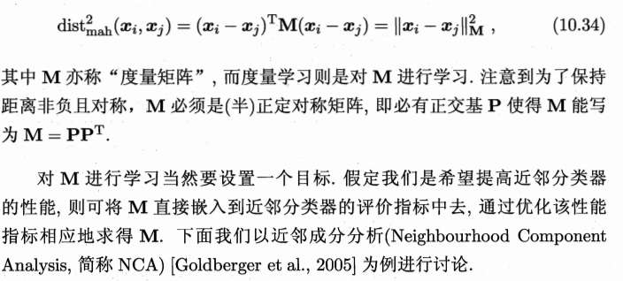
近邻分类器判别时采用概率投票法，对于任意样本\(\vec{x_j}\),它对\(\vec{x_i}\)分类结果影响的概率为
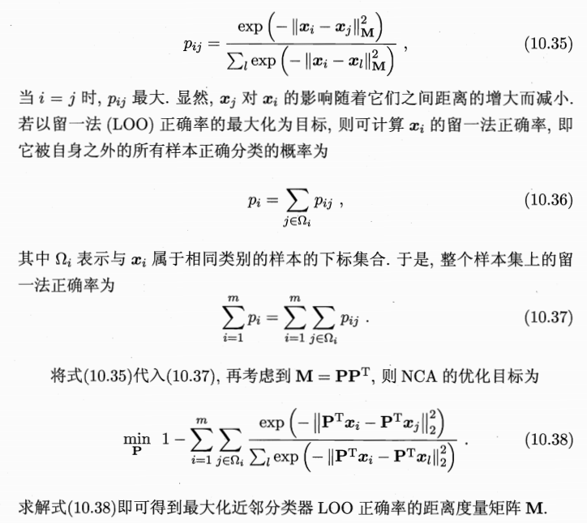
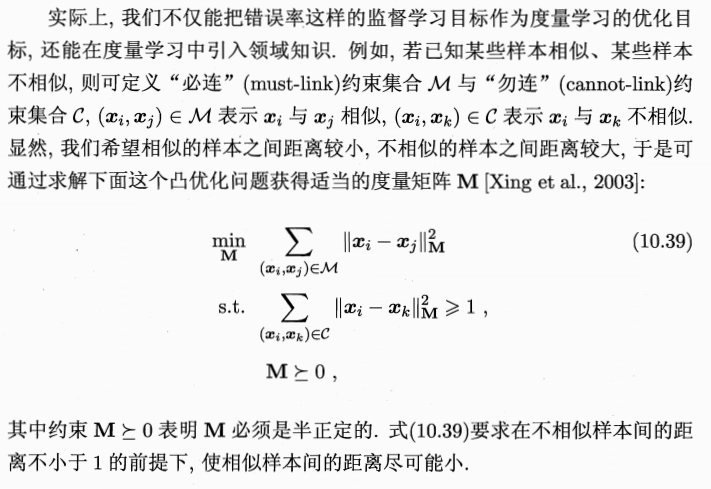